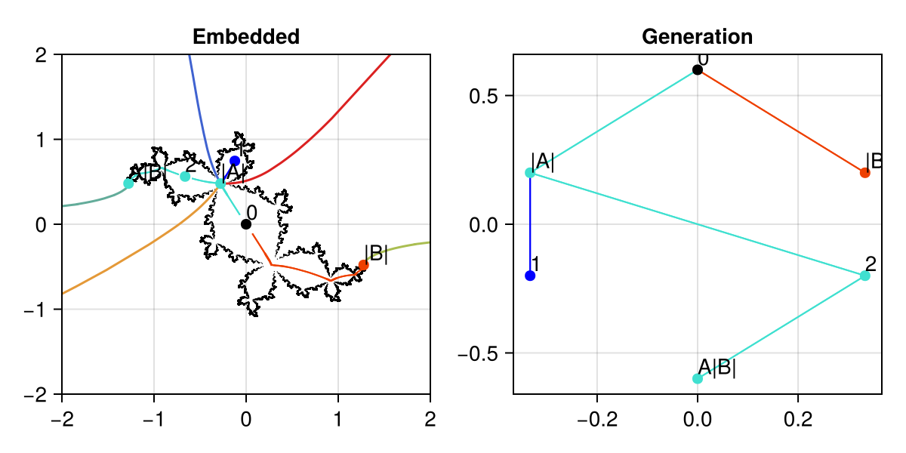
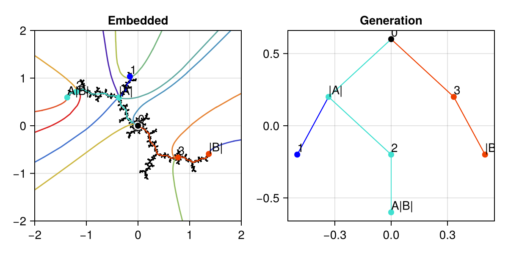
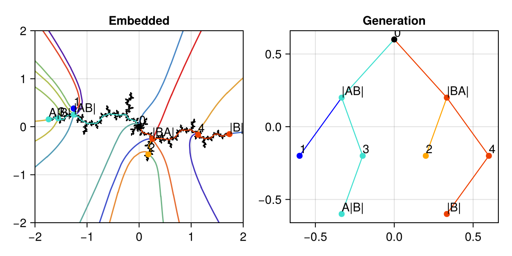

Tree Plot Gallery
Two ways to visualize the same Hubbard tree.
$1/7$ (internal address $[1,3]$)
using CairoMakie, BrotViz, Mandelbrot
fig = Figure(size=(600, 300))
ax1 = Axis(fig[1,1], title="Embedded")
embeddedtreeplot!(ax1, 1//7)
limits!(ax1, -2, 2, -2, 2)
generationtreeplot!(Axis(fig[1,2], title="Generation"), 1//7)
fig
$3/15$ (internal address $[1,2,4]$)
fig = Figure(size=(600, 300))
ax1 = Axis(fig[1,1], title="Embedded")
embeddedtreeplot!(ax1, 3//15)
limits!(ax1, -2, 2, -2, 2)
generationtreeplot!(Axis(fig[1,2], title="Generation"), 3//15)
fig
$12/31$ (internal address $[1,2,5]$)
fig = Figure(size=(600, 300))
ax1 = Axis(fig[1,1], title="Embedded")
embeddedtreeplot!(ax1, 12//31)
limits!(ax1, -2, 2, -2, 2)
generationtreeplot!(Axis(fig[1,2], title="Generation"), 12//31)
fig